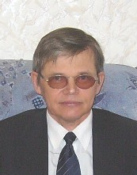

Деканат ФКН

Гуц Александр Константинович
Декан факультета компьютерных наук,
доктор физико-математических наук,
профессор.
доктор физико-математических наук,
профессор.
E-mail: aguts@mail.ru
Статьи на Los Alamos сервере xxx.lanl.gov:
- Toposes in General Theory of Relativity. - Paper: gr-qc/9610073. (совм. с Е.Б.Гринкевичем)
- Time machine as four-dimensional wormhole. - Paper: gr-qc/9612064.
- Restoration of the Past and three Principle of Time. - Paper: physics/9705014
- Solution of the vacuum Einstein equations in Synthetic Differential Geometry of Kock-Lawvere. - Paper: physics/9909016. (совм. с А.А.Звягинцевым)
- Interaction of the Past of parallel universes. - Paper: physics/9910037
- Topos-theoretic Model of the Deutsch Multiverse. - Paper: physics/0203071 (Web-version)
Книги и учебники:
- Математика
- Топосы. - Омск: ОмГУ, 1989. - 35 с.
- Аналитическая геометрия и геометрическая алгебра. - Омск: ОмГУ, 1992. - 38 с.
- Кардинальные и трансфинитные числа. - Омск: ОмГУ, 1995. - 82 с.
- Математическая логика и теория алгоритмов. - Омск: "Наследие. Диалог-Сибирь", 2003. - 108 с.
- Математическая логика и теория алгоритмов. Изд.2, доп. - М.: Книжный дом "ЛИБРОКОМ" 2009. - 120 с.
- Компьютерные науки
- Электронная почта и InterNet в ОмГУ. - Омск: ОмГУ, 1997. - 146 с.
- Комплексный анализ и информатика. - Омск: ОмГУ, 2002. - 144с.
- Троянские кони. Принципы работы и методы защиты. - Омск: "Наследие. Диалог-Сибирь", 2003. - 84 с.
- Комплексный анализ и кибернетика. - М.: Издательство ЛКИ, 2007. - 144
- Основы квантовой кибернетики. - Омск, 2008. - 204с.
- Теория игр и защита компьютерных систем. - Омск: изд-во ОмГУ, 2013. - 160с.
- Физика
- Элементы теории времени. - Омск: Издательство Наследие. Диалог-Сибирь, 2004. - 364с.
- Хроногеометрия. Аксиоматическая теория относительности. - Омск: ООО "УниПак", 2008. 340 с.
- Элементы теории времени. Изд.2, доп. - М: УРСС, 2011. - 376с.
- Физика реальности. - Омск, 2012. - 424с.
- Социология
- Глобальная этносоциология. - Омск: ОмГУ, 1997. - 215 с.
- Социальные системы. Формализация и компьютерное моделирование. - Омск: ОмГУ, 2000. - 160с.
- Математические модели социальных систем. - Омск: ОмГУ, 2000. - 256с.
- Компьютерное моделирование. Инструменты для исследования социальных систем. - Омск: ОмГУ, 2001. - 92с.
- Математическая социология. - Омск: Изд-во Наследие. Диалог-Сибирь,2003. 192с. (совм. с Л.А.Паутовой и Ю.В.Фроловой).
- Математические методы в социологии. - М.:Издательство ЛКИ, 2007. 216с. (совм. с Л.А.Паутовой и Ю.В.Фроловой).
- Глобальная этносоциология. Изд.2, доп. - М.: Книжный дом "ЛИБРОКОМ", 2009. - 236 с. (совм. с Л.А.Паутовой)
- История
- Подлинная история России. - Омск, ОмГУ, 1999. - 192 с.
- Многовариантная история России. - М.: АСТ/СПб.: ПОЛИГОН, 2000. - 381 с.
- Экология
- Кибернетика катастроф лесных экосистем. - Омск: изд-во КАН, 2012. - 220 с.
Web-сайты:
- Омск в Сети (совм. с Аллой Захаровой)
- Картины Константина Васильева в Омске
- Картины Лукаса Кранаха Старшего
- Ленинградская геометрическая школа
- Моделирование этнических и социальных процессов
- Теория машины времени и сверхбыстрых межзвезных кораблей
- Новая хронология мировой истории
- Теория времени А.Н.Козырева
- Револьт Пименов
- Поэт Вадим Делоне
- Подлинная история России
- Сибирские топосы
- Деревня Полияновка